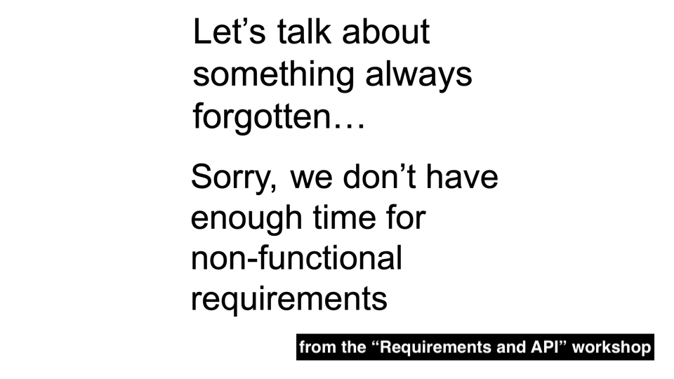

Non-functional Requirements and API

Previously we discussed the notion of requirements for APIs. Now let's talk specifically about their quality attributes. Or how we can refer to them: non-functional requirements.
When we use the term "non-functional requirements," we imply that there should be "functional requirements" as well. What is a functional requirement for an API endpoint? Return a response based on the provided input data. It sounds oversimplified, but this is how it is.
In detaching API from the functionality, meaning we have a variety of APIs for different consumers, I like an association with a "door." Despite any context, the primary function of a door is to change its state from closed to open and vice versa. The door can be built from different materials, and it can be opened by various means. The opened door can lead to different locations. But its primary function remains the same. We are not considering it as a weapon, even if you hit someone by a door (accidentally, I believe).
However, the quality of that door matters, and the same we apply to API. There are dozens of non-functional characteristics, so we only look at major ones.
Security
A banking term KYC (Know Your Customer) also works for APIs. Whether it is an internal, partner, or public API, we need to do the following:
- Onboarding - provide means for a consumer to start.
- Authentication - identify your consumer.
- Authorization - manage the access level.
- Offboarding - terminate consumer access.
We must prevent unauthorized access to our system with API and avoid leaking sensitive information that can damage business and infrastructure. The latter is also relevant for authorized users: we don't want to expose some technical details of how the system works or any data not related to a particular consumer.
API is a vulnerable place, so there are dozens, if not hundreds, of books and other materials related to security measures and approaches. Using JWT (JSON Web Tokens) tokens is the most common approach nowadays. I don't cover this extensive topic in this article, so I just suggest some reading:
Security must be an essential part of the Architecture design from the beginning. It should cover everything exposed in the API layer, not just a single endpoint.
Reliability
What happens if something goes wrong? Getting a successful response is not always the case, so we must consider every possible issue.
The first is what we return to consumers: error codes and their messages. API should return a meaningful error message so a consumer can understand what happened and what they should do to get a successful result with the next call.
There are 4xx and 5xx HTTP status codes, so you don't need to reinvent the wheel. The best practice is to have an Errors template with common cases such as 401, 404, and 500, with the possibility of extending them with custom errors. The custom errors should still be based on the HTTP status codes, so pick the code wisely.
There is a classic case with the codes: if a Search API does not find any result, it should return 404 (Not found) or 200 (OK).
One more area is error resilience: what happens if something goes wrong in the request logic? For example, your API call is trying to reach a currently unavailable service. There are several scenarios for the so-called Circuit Breaker:
- Throw an error immediately.
- Try several times.
- Use a plan B to reach a duplicate of that service after trying several times.
Another issue is with composite API: you should make two requests to aggregate data across different services. One responded, another didn't. Your composite API can return an error. Or it can return partial or even mock data. But remember to notify a consumer that data needs to be completed.
A weak point of composite API requests is transaction consistency. When an API endpoint triggers an update operation in several services, an issue may occur if some service does not proceed. Ideally, we have to cancel an entire transaction and re-write the already updated data. But in practice, it may be tricky as those changes appear in the history of system changes, or you simply don't know how to revert it.
Performance
Sometimes it isn't easy to separate system performance from API performance. But it becomes a crucial element if we are talking about a separate layer as API Gateway. Acting as a proxy or orchestrator, it must process requests and respond quickly.
Performance is another weak point for composite APIs. More internal calls we make than more performance may suffer. We can't control how quickly other services will respond (or will they respond at all).
But first of all, we need to understand the criteria to measure API performance: request payload, testing environment, available resources for services similar to production, what we consider as low performance, etc. Performance testing should become a routine, not something done during a release.
Usability
Developers who will integrate with your API are your direct users. So you need to care about Developer Experience (DX). For API, it matters to follow the best industry practices, not to confuse the developers, and provide meaningful documentation.
API documentation is essential to onboard developers and help them use your API effectively. If they ask you questions, you need to consider further improvements.
API docs (API references) can be autogenerated, produced manually, or combined with these two approaches. The key point is to define the required components and the formatting. For example, an API must have a summary with 2-3 words using a verb ("Make Americano") and a description with more information ("To trigger making of a small cup of Americano without milk"). Every request/response attribute must also have a description and example ("machineId" - unique identifier of a remote coffee machine, "edtu-1234-as34-1234").
Maintainability
I would instead call it API contract persistence. Both sides must respect the contract, but only the owner can change it. As soon as your API is published, making changes can be problematic.
Deploying an API endpoint and never changing it is not possible. An imperative "Don't break API contract" impacts how you will support it. If the initial design is bad, changes will likely introduce backward incompatibility. So if you release a new incremental version, consumers will have to keep up with the changes on their side.
I already wrote an essay on that topic (link), so I will not repeat its points. From the quality perspective, we must consider how we will maintain the API in the future.
Compliance
Don't be surprised that API is a subject of compliance. And it is not limited to organization or industry standards. In some cases, especially for finance and health, regulatory standards need to be addressed depending on the region of operation. Here are two sources to dive into that topic:
Summary
When defining requirements and design for API, you need to take into account its quality attributes, also known as non-functional requirements in the Business Analysis world. They are usually in the shadow of exciting system functionality. But if not addressed from the beginning, both parties will suffer, one from using that API and another from maintaining it. So let's agree that quality comes first.
Take care,
Ilya